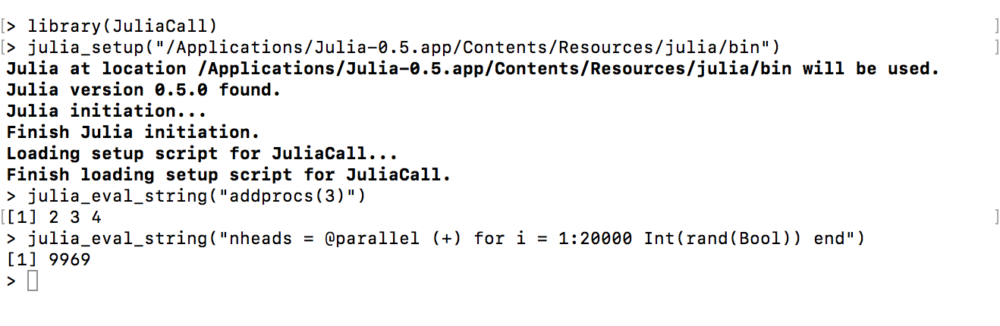
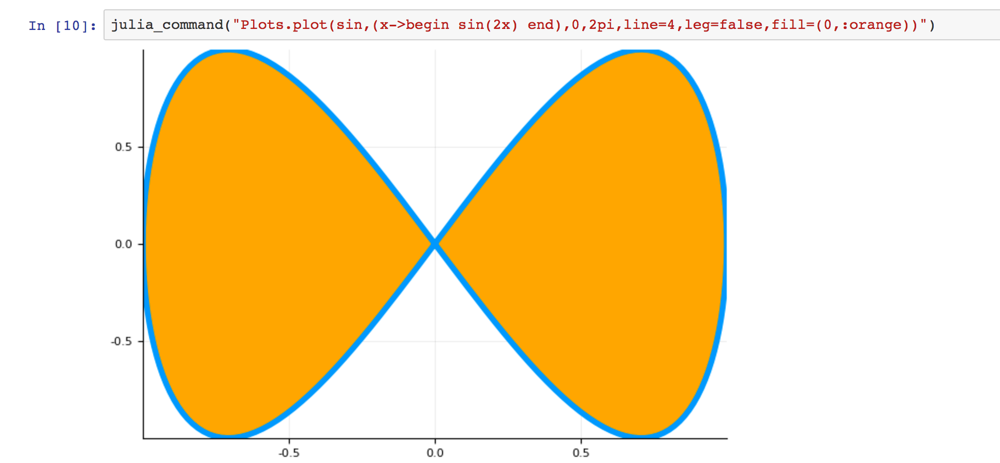

Gallery
Changcheng Li
2017-09-23

Use RCall.jl together with JuliaCall

If you set the option of useRCall = TRUE in julia_setup(), which is the default setting. You could integrate the use of R and julia even more! For example, the julia command R"Rcommand" will evaluate “inline” R command, and you can go into R REPL mode in julia_console() by simply pressing $.
Parallel Computation in JuliaCall

Note that due to the issue 14577 in julia v0.6.0, it is not possible to do parallel computation using JuliaCall and julia v0.6.0, but the issue is already fixed, and the parallel functionality should work using JuliaCall and future release of julia.
JuliaCall in Jupyter R Notebook
For the whole notebook, please go to https://nbviewer.jupyter.org/gist/Non-Contradiction/0ee469895d828b98cfde5fa853f84434.
